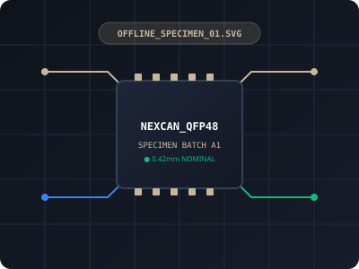

2. Remote Online Media Gallery
Click the macro photo below to open Unsplash in an isolated tab:

These assets load instantly with zero internet connection:

./specimen_report.html!
Navigation test: Open Local Specimen Inspection Report →
Click the macro photo below to open Unsplash in an isolated tab: